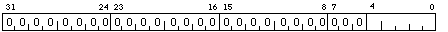
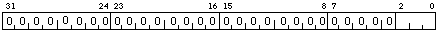
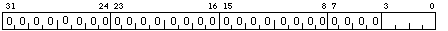
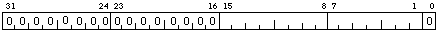

SCBB holds the Physical address of the System Control Block The address must be long aligned (the low 2 bits must be 00) . The System Control Block is a page of vectors for aborts, faults, traps, and interrupts.

The IPLR accesses bits 20 to 16 of the PS.

The ASTR holds the value of the most privileged access mode for which an AST is pending. Only bits 0 to 2 are used. The top bits are ignored on a write and returned as 0 on a read. ASTÕs are serviced on a rei instruction. The register is initialised at boot time to 0x4 (ie No AST pending).

The SIRR is write only. A

The SISR holds a summary of the pending software interrupts. The register is cleared at boot time and may be cleared by software using a